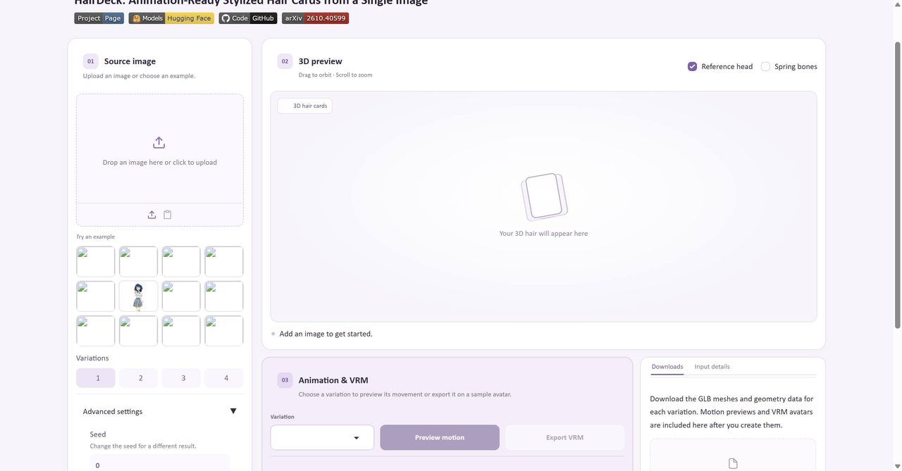
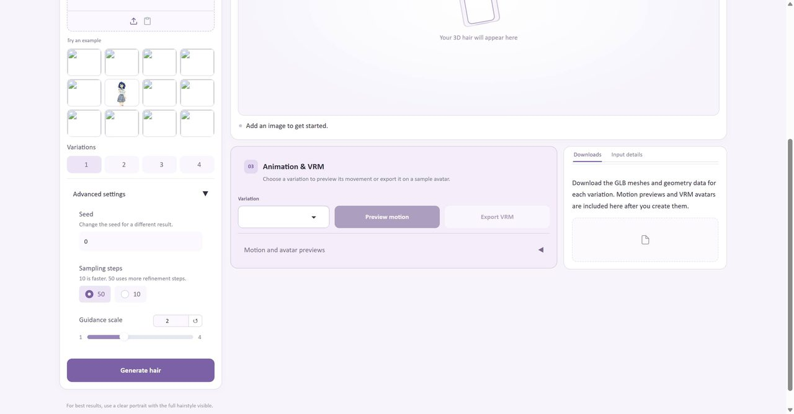

头发
用 HairDeck 从一张图做发卡头发
HairDeck 读一张人像，做出带贴图坐标的风格化发卡，可以下 GLB，也可以把这头发放到一个示例人偶上再导出 VRM。它是单独的网页，不在 VRoid Studio 的头发编辑器里。下面的按钮名和数字都是官方演示页上读到的。这一篇还没有生成结果，图是演示面板。
免费演示页
不扣 Colab 计算单元、打开就能用的地址是 https://huggingface.co/spaces/hyz317/HairDeck。这个页面里加载的应用是 https://hyz317-hairdeck.hf.space。上面的界面截图来自这里。Colab 那一份是同一套程序装在自己的运行时上，会扣计算单元。
官方演示页的上半

Source image 下面写着 Upload an image or choose an example。上传区的字是 Drop an image here or click to upload。再往下是 Try an example 和一排示例图。Variations 有 1、2、3、4，这一屏选中的是 1。
3D preview 的说明是 Drag to orbit · Scroll to zoom。Reference head 是勾上的，Spring bones 没勾。视口里的标签是 3D hair cards，空的时候写着 Your 3D hair will appear here，下面一行是 Add an image to get started。
参数、预览动作和导出

Advanced settings 里三项。Seed 的数字是 0，旁边写 Change the seed for a different result。Sampling steps 有 50 和 10，选中的是 50，说明是 10 is faster. 50 uses more refinement steps。Guidance scale 的数字框是 2，滑杆从 1 拉到 4。主按钮是 Generate hair。页脚写着 For best results, use a clear portrait with the full hairstyle visible。
03 Animation & VRM 的说明是 Choose a variation to preview its movement or export it on a sample avatar。里面有 Variation 下拉框、Preview motion 和 Export VRM。Export VRM 是把这头发放到示例人偶上导出，不会写进 VRoid Studio 的头发滑杆。Motion and avatar previews 这一屏是收着的。
右边 Downloads 页写着 Download the GLB meshes and geometry data for each variation. Motion previews and VRM avatars are included here after you create them。旁边还有一页 Input details，这一屏没有点开。
装到已打开的 Colab
演示装在已经打开的那个笔记本里，文件名是 HairDeck.ipynb。当时想要中等偏上的卡。A100 没有空位，保存之后页面落到过一次 T4。改选 L4 并确认重连之后，nvidia-smi -L 打印的是 GPU 0: NVIDIA L4。同一格里的 torch 是 2.8.0+cu128，CUDA 12.8，torch.cuda.is_available 为 True，设备名也是 NVIDIA L4。模型载入后 nvidia-smi 是 6968 MiB / 23034 MiB。16 GB 的 T4 放得下这份占用，H100 是灰的，没有用 G4，于是改到 T4。换卡之后 nvidia-smi -L 是 GPU 0: Tesla T4，总显存 15360 MiB。换卡会清掉那台机器上已经下好的权重。
笔记本内核的 Python 是 3.13，HairDeck 写明在 3.12 上测过，所以第一格另建了 Python 3.12 的虚拟环境，再装 requirements.txt、pyrender 0.1.45 和 requirements-demo.txt。权重用 scripts/setup/download_weights.py --gated-source modelscope，SAM 3 和 DINOv3 从 ModelScope 下，避免门控仓库要登录。HairDeck 自己的权重仍从公开的 hyz317/HairDeck 下。第一格在 SAM 3 处退出：那次单连接下到大约 817 MB 就断了，校验没过。随后按字节区间从第 857140152 字节续传，sam3.pt 的大小是 3450062241，sha256 是 9999e2341ceef5e136daa386eecb55cb414446a00ac2b55eb2dfd2f7c3cf8c9e。
第二格把 MPLBACKEND 设成 Agg，再运行 demo/app.py --port 7860 --no-warmup。不改的话，Colab 带进来的 matplotlib backend 会让进程在载入时退出。这一次日志写着 loaded in 26.6 s，GPU memory 6.41 GB，chains on，然后是 Running on local URL: http://127.0.0.1:7860。页面嵌在第二格下面。输出里先有一行 sam 3450062241，然后是 PID 和 PORT_OPEN。
仓库代码是 Apache-2.0。SAM 3 和 DINOv3 随各自的许可一起下载，不跟 HairDeck 的许可证混用。运行时连着就会扣计算单元。打开演示时资源面板大约还剩 237.63，用量大约 2.33 每小时。